Sheet 1
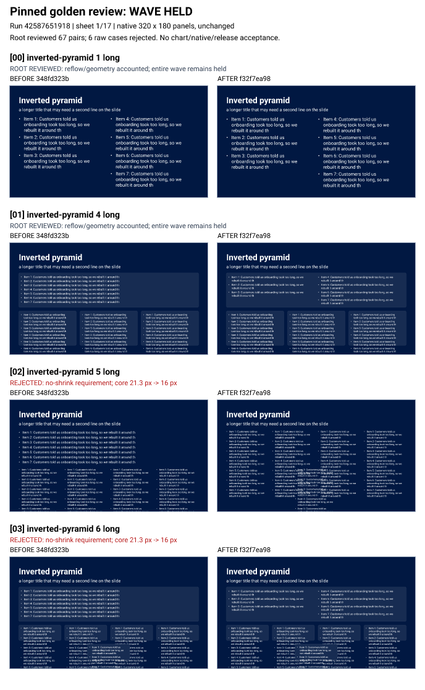
WAVE NOT ACCEPTED. Root reviewed all 67 pairs and all 3 removed before-pages. Six raw cases reject the no-shrink requirement: indices 2,3,6,7,10,11. Chart design/native/release gates remain held.
Each panel uses the exact original 320 x 180 PNG at integer native size. All 134 embedded RGBA panels verify byte-exact against the original source images. Labels and rejection markers are outside the panels. Open a PNG at original size for inspection.

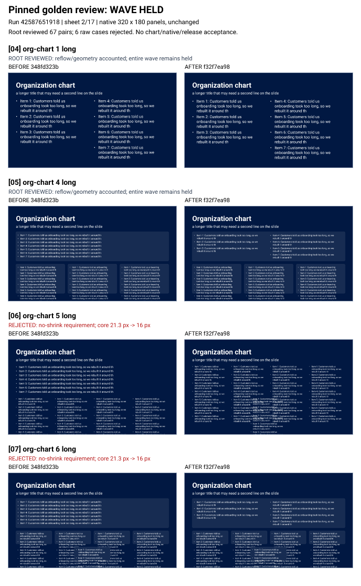
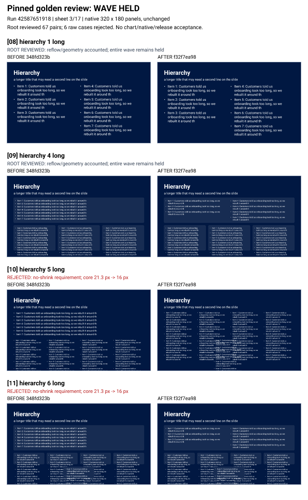
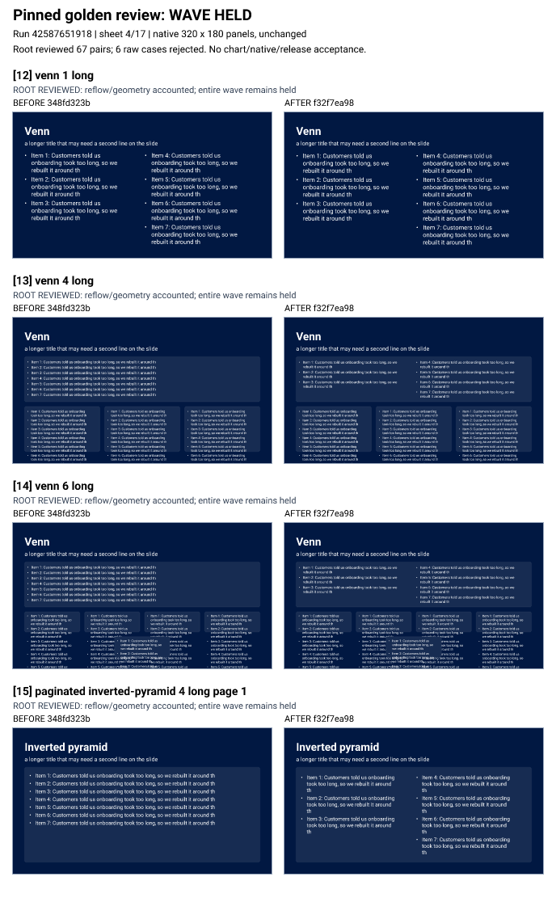
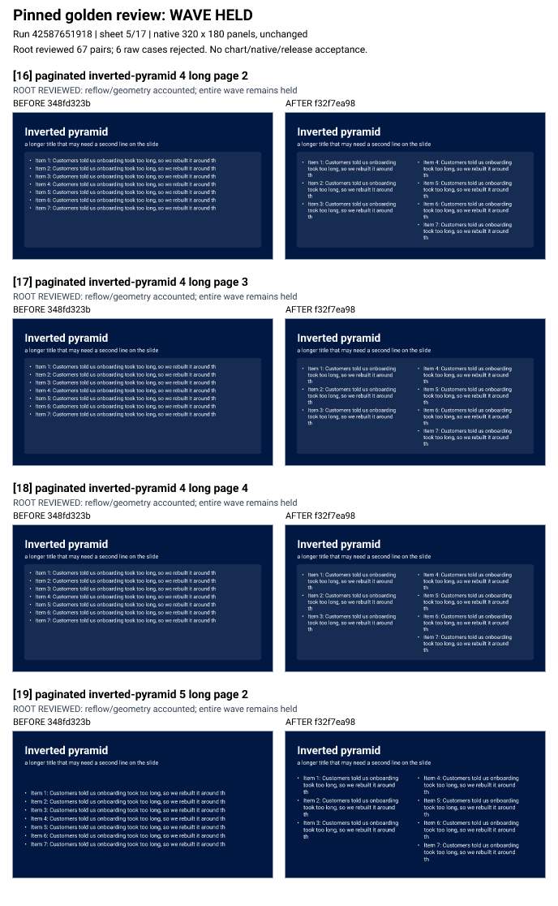
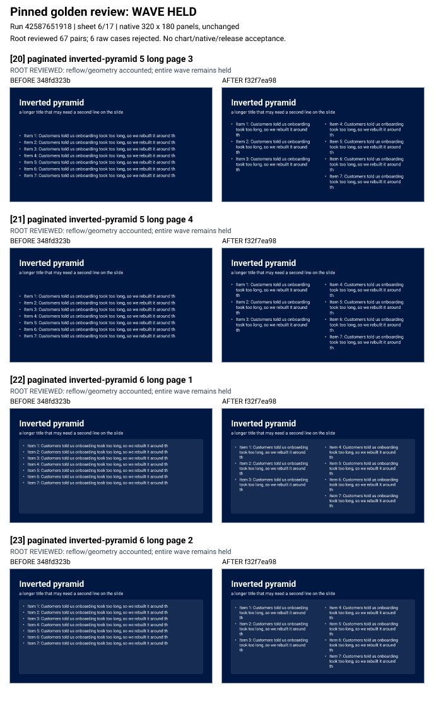
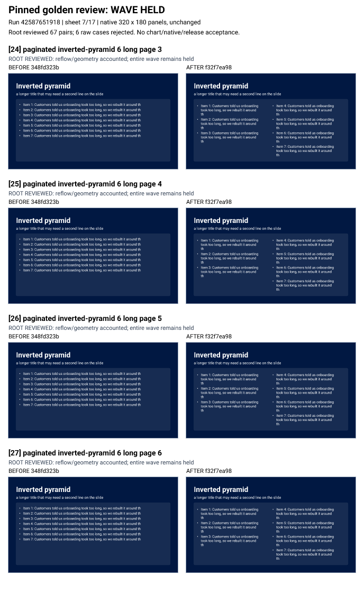
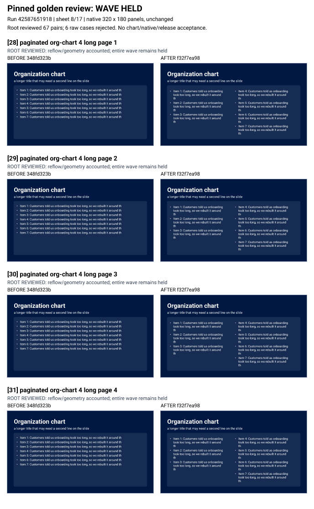
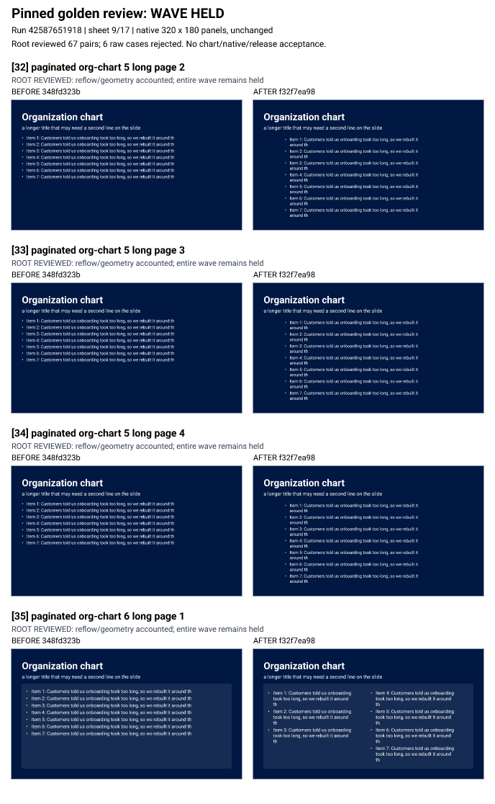
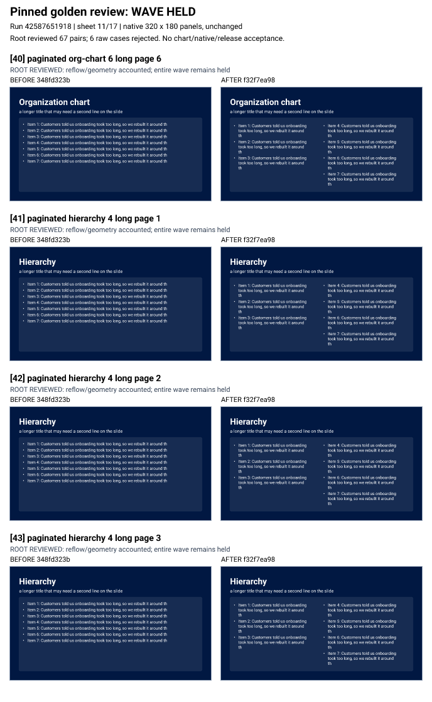
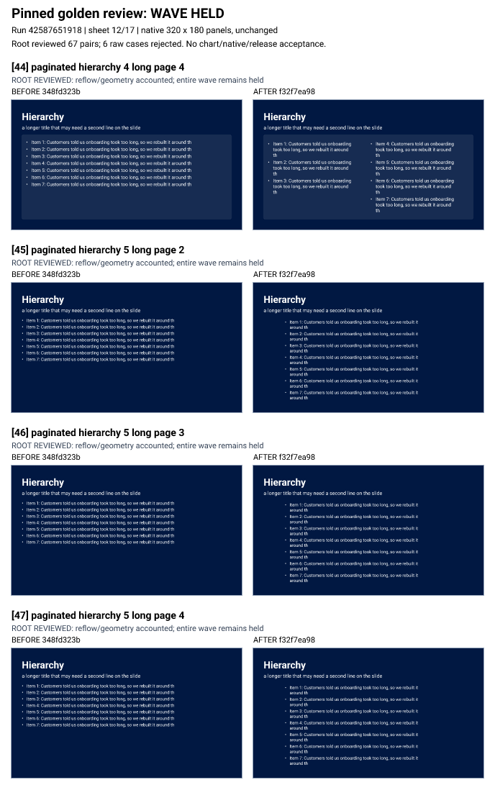
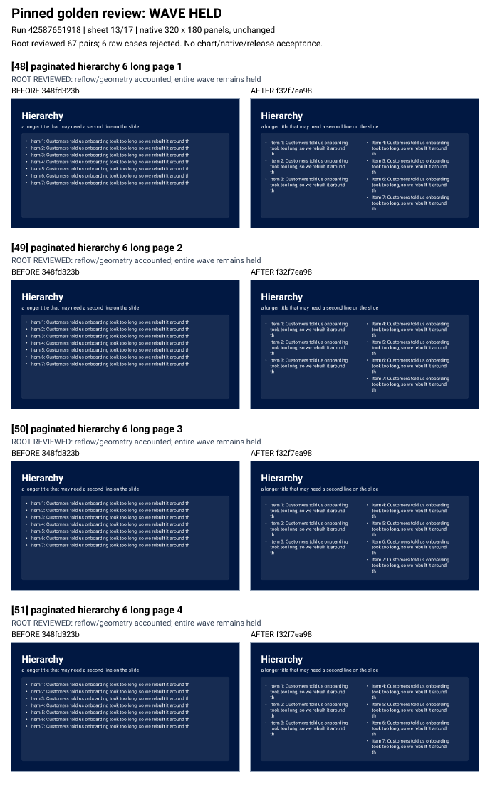
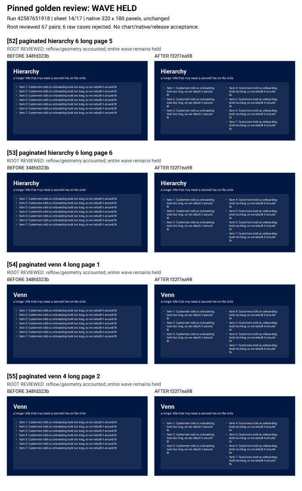
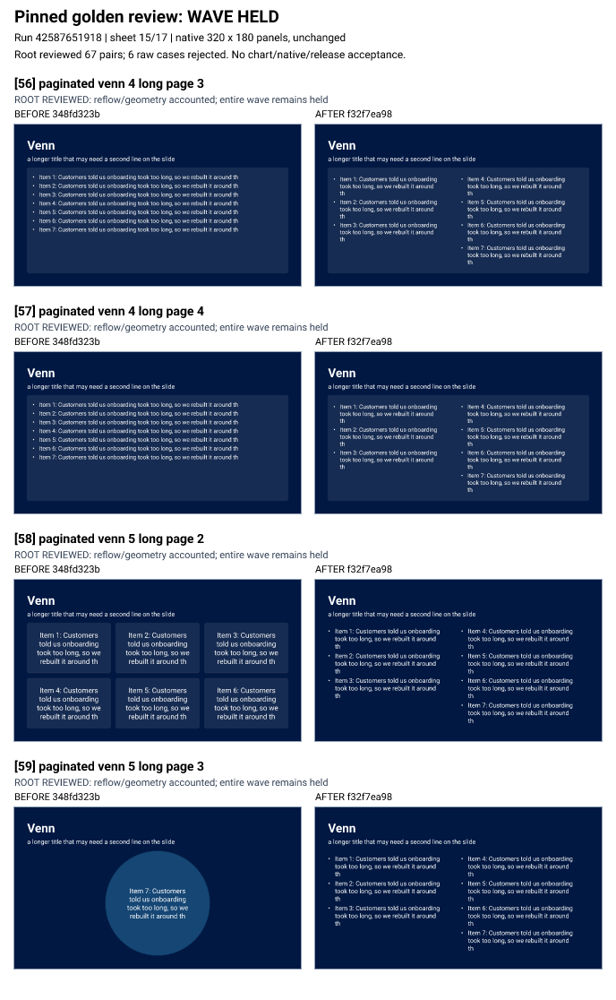
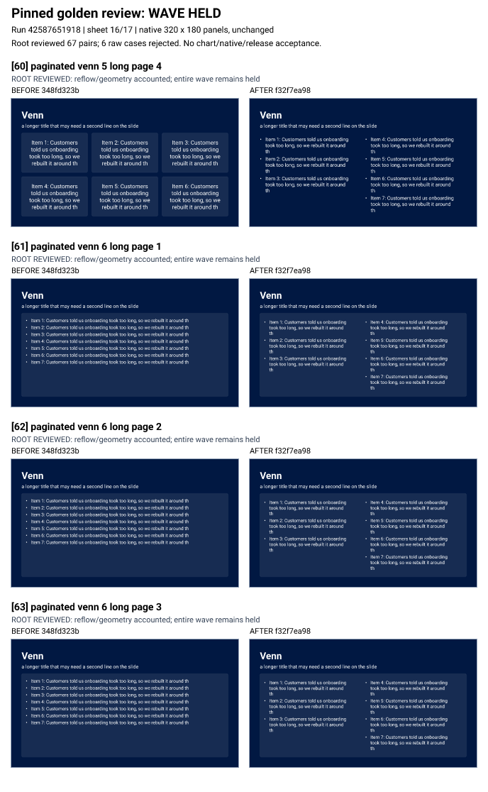
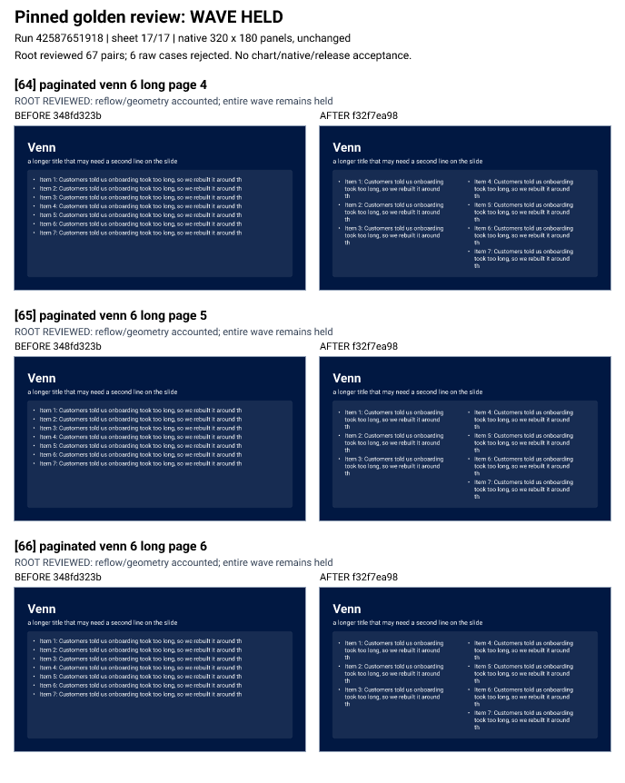